Черновой перевод приложения и кадры японской карточки в App Store. Страница только для вычитки, в поиске не индексируется.
Что здесь. 14 кадров витрины, снятых с приложения, запущенного на японском, и полный список строк: слева оригинал, справа перевод. Всего строк 135: переведено 127, намеренно оставлено на английском 8.
На что смотреть. Не столько на дословность, сколько на тон и на длину: длинная строка ломает вёрстку в узких местах — чипах и кнопках. Если что-то звучит неестественно или слишком буквально, отметь строку: править по одной легко.
\n — значимый перенос строки внутри текста.
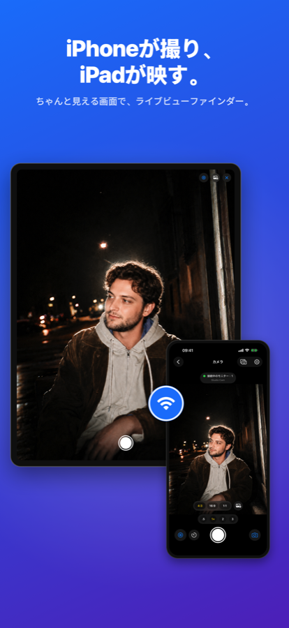
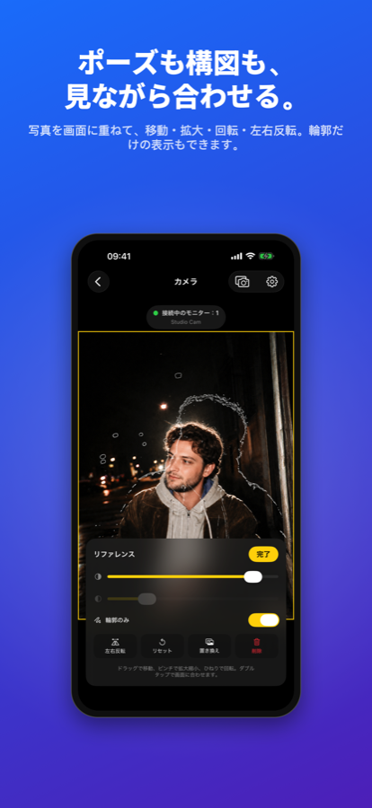
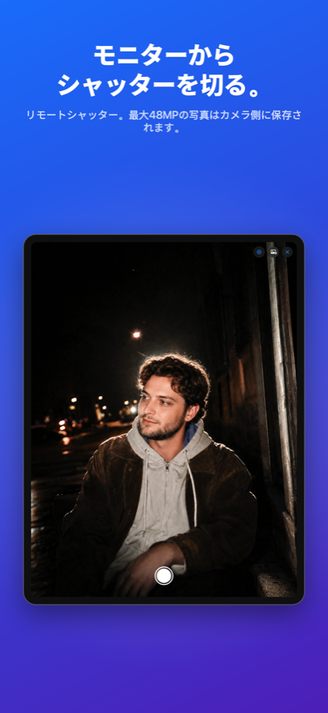
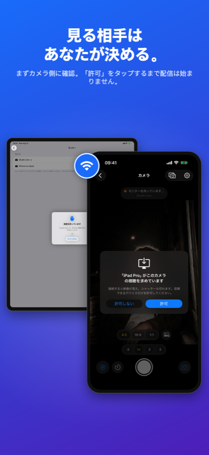
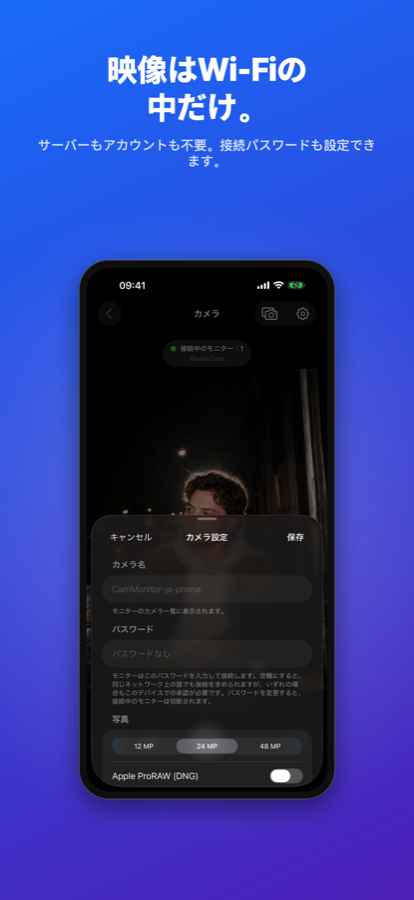
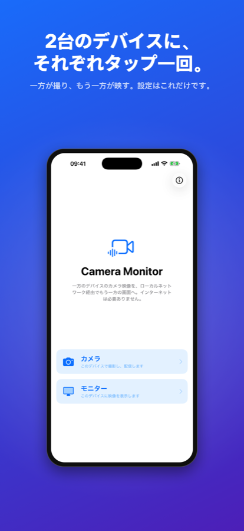
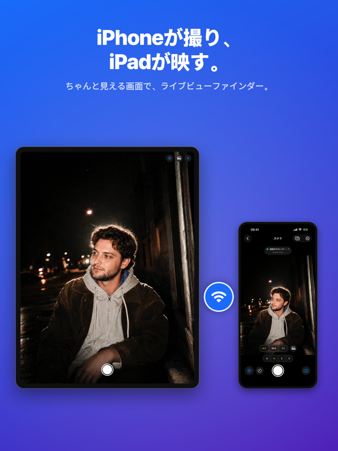
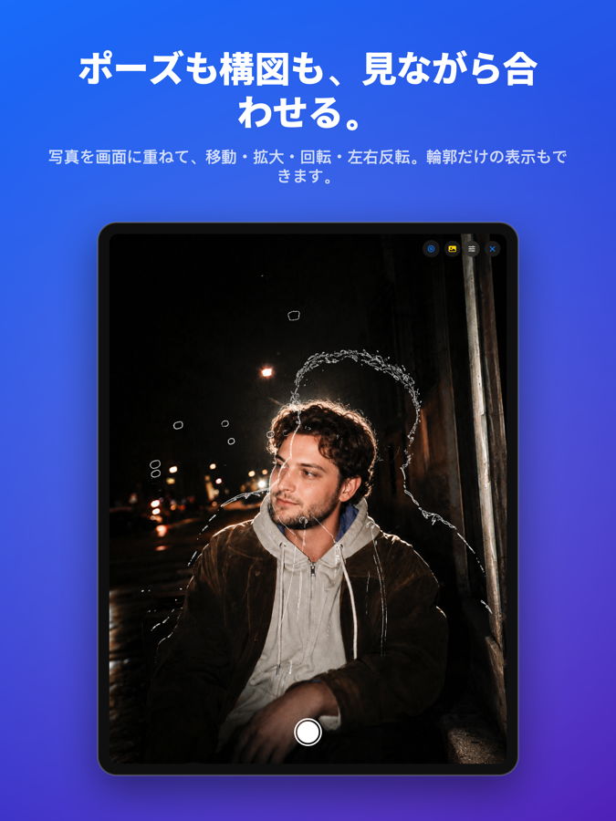
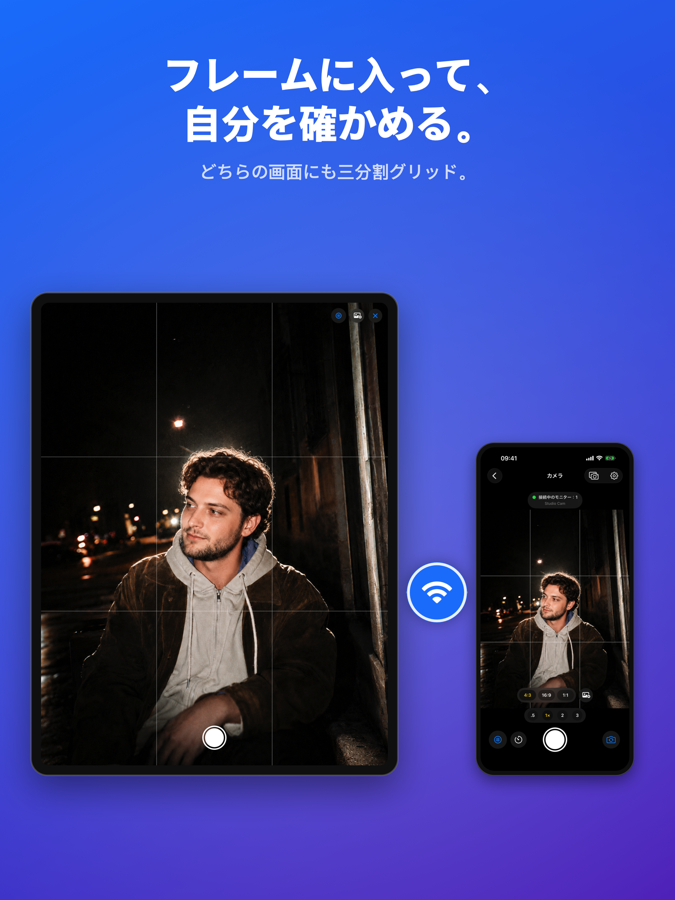
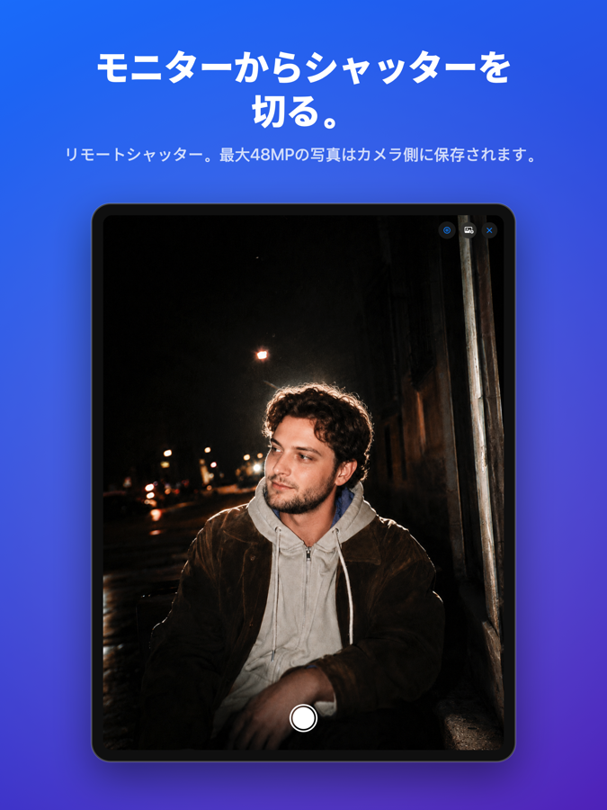
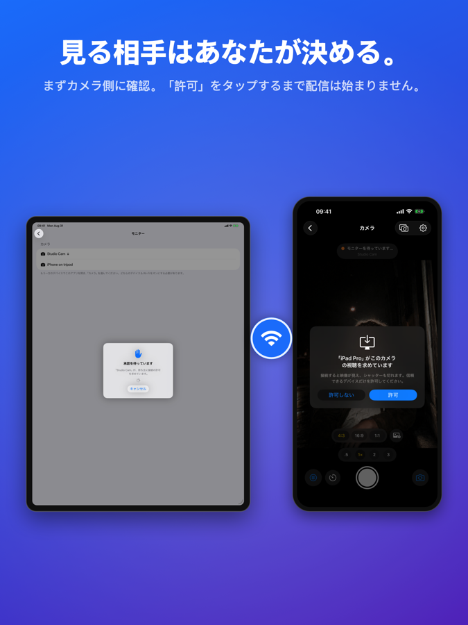
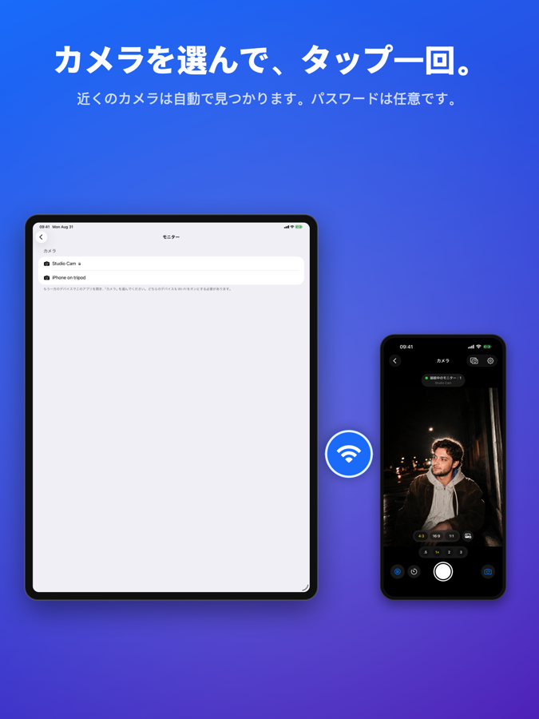
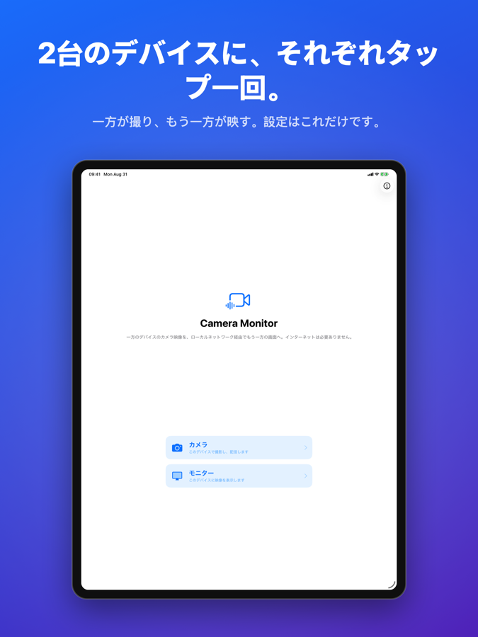
| Оригинал | Японский |
|---|---|
| Monitor | モニター |
| Stream the camera of one device to the screen of another over your local network — no internet needed. | 一方のデバイスのカメラ映像を、ローカルネットワーク経由でもう一方の画面へ。インターネットは必要ありません。 |
| This device films and broadcasts | このデバイスで撮影し、配信します |
| This device shows the camera feed | このデバイスに映像を表示します |
| Оригинал | Японский |
|---|---|
| Choose a Role | 役割を選択 |
| Continue | 続ける |
| Install this app on both devices and turn Wi-Fi on. The same network is the easy case, but it is not required — devices near each other link up directly. One becomes the Camera: it films and broadcasts. The other becomes the Monitor: it shows the live feed and can take the shot. | 両方のデバイスにこのアプリを入れ、Wi-Fiをオンにします。同じネットワークにあれば簡単ですが、必須ではありません。近くにあるデバイス同士は直接つながります。一方が「カメラ」になって撮影と配信を行い、もう一方が「モニター」になって映像を映し、シャッターを切れます。 |
| Meanwhile on the monitor: “Waiting for approval” | このときモニター側には「承認を待っています」と表示されます |
| Name | 名前 |
| Name your camera, add a password | カメラに名前とパスワードを |
| On the camera device, set a name so it's easy to recognize in the monitor's list. Add an optional password so strangers on your network can't watch. | カメラ側のデバイスに名前を付けておくと、モニターの一覧で見分けやすくなります。パスワードを設定すれば、同じネットワーク上の知らない相手に見られることもありません。 |
| See yourself as the camera sees you | カメラから見た自分を確かめる |
| Skip | スキップ |
| The phone on the tripod films you — but its screen faces away. Camera Monitor puts the live picture on a second screen, so you can fix your pose, framing and light without walking back. | 三脚のiPhoneはあなたを撮っていますが、画面は向こう側を向いています。Camera Monitorはその映像をもう一台の画面に映すので、いちいち戻らずにポーズや構図、光を直せます。 |
| Two devices, one app | 2台のデバイスに、1つのアプリ |
| When a monitor connects, the camera device asks first — the monitor waits until you tap Allow. Nothing streams before that. | モニターが接続すると、まずカメラ側に確認が表示されます。あなたが「許可」をタップするまでモニターは待機し、それまで映像は流れません。 |
| With | あり |
| Without | なし |
| You decide who watches | 見る相手はあなたが決める |
| films and\nbroadcasts | 撮影して\n配信する |
| how the monitor sees it | モニターでの見えかた |
| over Wi-Fi | Wi-Fi経由 |
| shows the feed,\ntakes the shot | 映像を映し\nシャッターを切る |
| “iPad” wants to view this camera | 「iPad」がこのカメラの視聴を求めています |
| Оригинал | Японский |
|---|---|
| %lld seconds | %lld秒 |
| %lld seconds left | 残り%lld秒 |
| %lld seconds until the photo | 撮影まで%lld秒 |
| %llds | %lld秒 |
| AE/AF LOCK | AE/AFロック |
| Allow | 許可 |
| Allow camera access in Settings to stream video. | 映像を配信するには、「設定」でカメラへのアクセスを許可してください。 |
| Aspect ratio %@ | アスペクト比%@ |
| Camera | カメラ |
| Camera Monitor keeps streaming while the Camera app is open, but it cannot pass the zoom or aspect ratio across — no iOS interface accepts them. | 「カメラ」アプリを開いている間も配信は続きますが、ズームやアスペクト比を引き継ぐことはできません。iOSにそのための仕組みがないためです。 |
| Camera Settings | カメラ設定 |
| Camera access is required | カメラへのアクセスが必要です |
| Camera name | カメラ名 |
| Cancel | キャンセル |
| Cancel the countdown | カウントダウンを中止 |
| Close | 閉じる |
| Cycles between off, 3, 5 and 10 seconds | オフ、3秒、5秒、10秒を順に切り替えます |
| Deny | 許可しない |
| Don't show again | 今後表示しない |
| Get the shortcut | ショートカットを入手 |
| Install the shortcut named “%@”. | 「%@」という名前のショートカットをインストールしてください。 |
| It will see the live view and can trigger the shutter. Allow only devices you know. | 接続すると映像が見え、シャッターも切れます。信頼できるデバイスだけを許可してください。 |
| Monitors connected: %lld | 接続中のモニター：%lld |
| Monitors must enter this password to connect. Leave it empty to let anyone on your network ask — every monitor still needs your approval on this device. Changing the password disconnects current monitors. | モニターはこのパスワードを入力して接続します。空欄にすると、同じネットワーク上の誰でも接続を求められますが、いずれの場合もこのデバイスでの承認が必要です。パスワードを変更すると、接続中のモニターは切断されます。 |
| No password | パスワードなし |
| Off | オフ |
| On | オン |
| Open Settings | 設定を開く |
| Open the Camera app | 「カメラ」アプリを開く |
| Password | パスワード |
| Photo | 写真 |
| Resolution | 解像度 |
| Resolutions are read from the current camera of this device. | 解像度は、このデバイスの現在のカメラから読み取られます。 |
| Resolutions are read from the current camera. ProRAW saves an unprocessed DNG at native sensor resolutions. | 解像度は現在のカメラから読み取られます。ProRAWでは、センサー本来の解像度で未処理のDNGを保存します。 |
| Rule of thirds grid | 三分割グリッド |
| Save | 保存 |
| Self-timer | セルフタイマー |
| Shown to monitors in the camera list. | モニターのカメラ一覧に表示されます。 |
| Starting camera… | カメラを起動しています… |
| Switch between front and back camera | 前面カメラと背面カメラを切り替え |
| Take photo | 写真を撮る |
| Tap the camera button here — it runs that shortcut, and the Camera app opens. | ここのカメラボタンを押すとそのショートカットが実行され、「カメラ」アプリが開きます。 |
| Try it | 試してみる |
| Waiting for a monitor… | モニターを待っています… |
| Zoom %@× | ズーム%@× |
| iOS does not let one app open the Camera app directly. A one-time shortcut does it for you. | iOSでは、アプリから「カメラ」アプリを直接開くことはできません。一度だけ設定するショートカットがその役割を果たします。 |
| “%@” wants to view this camera | 「%@」がこのカメラの視聴を求めています |
| Оригинал | Японский |
|---|---|
| Camera is in the background | カメラがバックグラウンドにあります |
| Cameras | カメラ |
| Connect | 接続 |
| Connecting… | 接続中… |
| Connection failed: %@ | 接続に失敗しました：%@ |
| Connection lost | 接続が切れました |
| Disconnect from this camera | このカメラから切断 |
| Goes back to the list of cameras | カメラの一覧に戻ります |
| Looking for cameras nearby… | 近くのカメラを探しています… |
| Open this app on another device and choose “Camera”. Both devices need Wi-Fi enabled. | もう一方のデバイスでこのアプリを開き、「カメラ」を選んでください。どちらのデバイスもWi-Fiをオンにする必要があります。 |
| Password required | パスワードが必要です |
| Photo failed | 撮影に失敗しました |
| Photo saved on camera | カメラ側に写真を保存しました |
| Stop reconnecting | 再接続をやめる |
| Take photo on the camera | カメラ側で写真を撮る |
| Trying to reconnect… | 再接続しています… |
| Trying to reconnect… (attempt %lld) | 再接続しています…（%lld回目） |
| Waiting for approval | 承認を待っています |
| “%@” declined the connection. | 「%@」が接続を拒否しました。 |
| “%@” is asking its owner to let you in. | 「%@」が、持ち主に接続の許可を求めています。 |
| “%@” is protected with a password. | 「%@」はパスワードで保護されています。 |
| Оригинал | Японский |
|---|---|
| Add a reference | リファレンスを追加 |
| Adjust the reference | リファレンスを調整 |
| Contrast | コントラスト |
| Discards the reference picture and its placement | リファレンス画像と配置を破棄します |
| Drag to move, pinch to zoom, twist to rotate. Double tap to fit. | ドラッグで移動、ピンチで拡大縮小、ひねりで回転。ダブルタップで画面に合わせます。 |
| Flips the picture left to right, for a reference that faces the wrong way | 向きが逆のリファレンスのために、画像を左右反転します |
| Freezes the reference and returns the frame to focus and exposure | リファレンスを固定し、画面をフォーカスと露出の操作に戻します |
| Mirror | 左右反転 |
| Mirror the reference | リファレンスを左右反転 |
| Opacity | 不透明度 |
| Opens a mode for moving, zooming and rotating the reference | リファレンスを移動・拡大縮小・回転するモードを開きます |
| Outline only | 輪郭のみ |
| Picks a photo to lay over the frame as a guide | 目安として画面に重ねる写真を選びます |
| Puts the reference back to fitting the frame, keeping the mirroring | 左右反転はそのままに、リファレンスを画面に合わせた状態に戻します |
| Reference | リファレンス |
| Reference overlay | リファレンス表示 |
| Remove | 削除 |
| Remove the reference? | リファレンスを削除しますか？ |
| Replace | 置き換え |
| Replace the reference | リファレンスを置き換え |
| Replaces the photo with its edges, so only the shapes show over the frame | 写真を輪郭線に置き換え、形だけを画面に重ねます |
| Reset | リセット |
| Shows or hides the reference picture over the frame | 画面に重ねるリファレンス画像を表示・非表示にします |
| The picture and its placement are discarded. | 画像と配置は破棄されます。 |
| Оригинал | Японский |
|---|---|
| About | このアプリについて |
| Camera Monitor streams the camera of one device to the screen of another over your local network. Video never leaves your network. | Camera Monitorは、一方のデバイスのカメラ映像をローカルネットワーク経由でもう一方の画面に配信します。映像がネットワークの外に出ることはありません。 |
| Contact | 連絡先 |
| Developer | 開発者 |
| Done | 完了 |
| Help | ヘルプ |
| How the App Works | 使いかた |
| Legal | 法的情報 |
| Privacy Policy | プライバシーポリシー |
| Terms of Service | 利用規約 |
| Version | バージョン |
| Строка | Почему |
|---|---|
%lld | число обратного отсчёта |
? | символ |
Apple ProRAW (DNG) | торговая марка Apple |
Camera Monitor | название приложения |
LIVE | значок; в японских камерах остаётся латиницей |
Studio Cam | подставное имя устройства, только для кадров витрины |
kozlovskyaid@icloud.com | адрес почты |
•••••• | маркер скрытого пароля |